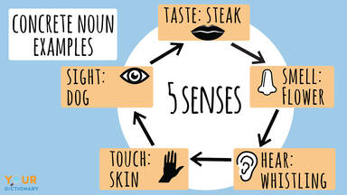
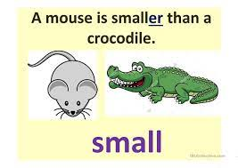
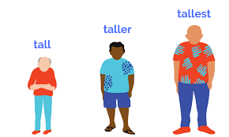
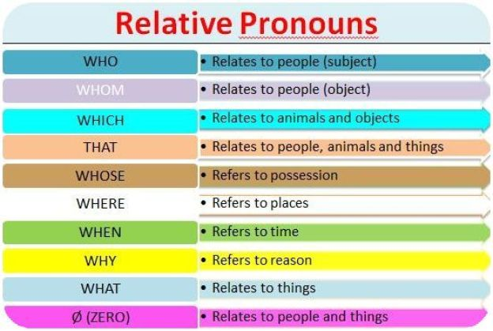
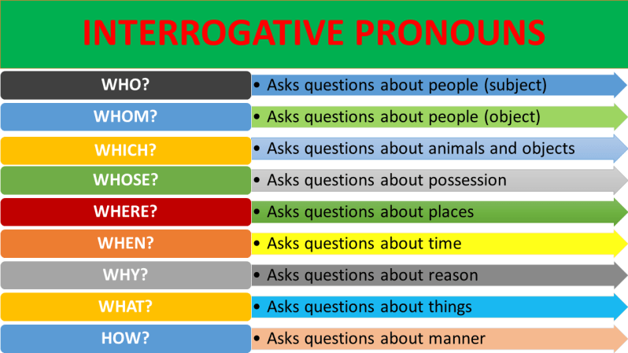

A noun is a word that names something, such as a person, place, thing, or idea. In a sentence,
nouns can play the role of subject, direct object, indirect object, subject complement, object
complement, appositive, or adjective. Often noun will be the name for somethig we can touch.
But sometimes a noun will be a name for something we can not touch. Everything is represented
by a word that lets us talk about it.
Types of nouns
Proper nouns
Common nouns
Material nouns
Compound nouns
Countable nouns
Uncountable nouns
Collective nouns
Concreate nouns
Abstract nouns
Proper Nouns
A proper noun is a noun that in its primary application refer to a unique entity.
Proper noun can also occur in secondary application, for example modifying nouns and in the role of common
nouns. A distinction is normally made in current lingistics between proper nouns and proper names. Words
derived from proper names are sometimes called proper adjectives. Not every noune or noun phrase that refers
to a unique entity is a proper name.
Uses of Proper Nouns
It is easy to use proper nouns, once you know what they are. Simply place them in your sentences as you
would common nouns ensuring that you capitalize them.
example :- We went to try a new resturant, so we went to test of Thai.
Resturant is a common noun.
Taste of Thai is a proper noun.
Common Nouns
A noun is a word that names a person, animal, place, thing, or idea. All nouns can be further classified as
a proper or common noun. Common nouns are words used to name general items rather than specific ones. Go into
your living room. What do you see? A lamp, chair, couch, TV, window, painting, pillow, candle – all of these
items are named using common nouns.Common nouns are everywhere, and you use them all the time, even if you don’t
realize it. Wherever you go, you’ll find at least one common noun. Street, closet, bathroom, school, mall, gas
station, living room; all of these places are things, and thus they are common nouns.
When to use Common Nouns
We use common nouns to denote a class of objects or a concept. Consider the word star, as in the stars we see in
the sky. Star is used as a common noun, used to denote the class of objects that we view in the night sky, i.e.
the luminescent bodies that are spread across the universe, twinkling overhead. The Sun, however, is a proper noun,
used to describe the specific star that is at the center of our solar system.
example :- when talking about your mother, mother is a common noun
My mother is an actress.
Barbara’s mother was the best cook in the city.
What is the difference between common and proper nouns?
When we look at the two main types of noun – proper and common – we can differentiate between the two by saying that a
proper noun is a general way of classifying something, and a proper noun is a specific way of classifying something, So,
for example, the word dog is a common noun; but if your dog was called Fido, the word Fido is a proper noun:
dog = common noun
dog's name = proper noun
Material Nouns
Material noun is the name given to the material, substance or things made up of alloy. It refers to the type of substance
instead of individual particles of the substance. Material nouns are not Countable means we can not count them because they
are in the form of liquid, semi liquid or solid. Sometimes we can not make the plural form of material noun.
Rules to be followed when using
Generally, articles(a, an or the) are not used with material nouns when they are uncountable.
example Water boils only at 100'C temperature.
Article may be used with material nouns when they are countable.
example I would like to eat a Dutch cheese.
Use of 'the' and 'some' can also be done in follower.
example I saw there is some milk in the glass.
Compound Nouns
Compound nouns are words for people, animals, places, things or ideas, made up of two or more words. Most Compound
nouns are made with nouns that have been modified by adjectives or other nouns. Some times one word like toothpaste,
haircut, bathroom etc. These are often refered to as closed or solid compound nouns.
Types of Compound Nouns
Solid compund noun
Hyphenated compound nouns
Open/spacesd compound nouns
Noun
+
Noun
toothpaste
adjective
+
Noun
mounthly ticket
Verb
+
Noun
swimming pool
Preposition
+
Noun
underground
Noun
+
Verb
haircut
Noun
+
Preposition
hanger on
Adjective
+
Verb
dry-cleaning
Preposition
+
Verb
output
Countable Nouns
Countable nouns refer to items that can be counted, even if the number might be extraordinarily high
(like counting all the people in the world, for example). Countable nouns can be used with articles such as a/an
and the or quantifiers such as a few and many. Look at the sentence below and pay particular attention to the
countable noun.
example :- How many candles are on that birthday cake.
Uncountable Nouns
Uncountable nouns are nouns that come in a state or quantity that is impossible to count; liquids are uncountable,
as are things that act like liquids (sand, air). Abstract ideas like creativity or courage are also uncountable.
Uncountable nouns are always considered to be singular, and can stand alone or be used with some, any, a little, and much.
See the examples below for reference.
example :- There is no more water in the pool.
Collective Nouns
A Collective noun is a word or phrase that refers to agroup of people or thing as one entity. One common error that arises
from using Collective noun is subject-verb disagreement. A Collective noun always describes a plurality of one kind or another.
Normaly we are use collective nouns as single. the past tense affords a wonderful respite from this subject-verb agreement
problem. We get this break because in the past tense, first-person and third person verb forms are the same.
example :- The siger was singing to a sold out hall for the third time in a row.
Concrete Nouns

Concrete nouns are the nouns that you can physically see and touch. This is generally easy to understand. If you look around
ypur Wherever you are, chances are that you will see hundreds of concreate nouns. They include common one like clothes or
windows, but also more rare ones like fossil or toothpick.
example :- The sunset unfurled ribbons of red purple and gold acress the key.
Abstract Nouns
An abstract noun is a noun that refers to an intangible concept such as an emotion, a feeling, a quality, or an idea. In other
words, an abstract noun does not refer to a physical object. It is sometimes helpful to think of an abstract noun as a word
that names something that you cannot see, hear, touch, smell, or taste (i.e., something you cannot perceive with one of your
five senses).
example :- Love is a kind of irresistible desire. It is hard to define.
Action : express physical activities of processes
for example : kick,shout,run,climb,stand,sit,grow
State : Is the verb that expresses the situation
for example : have be ,have,think,like,own
The different between state and action verbs is
⭐
State verb cannot be used in -ing (continuous) forms
when you want to use continuous form you can only do that with action verbs
State verbs: 1. I have a large family.
>I'm having a large family
2. Julia likes chocolate ice cream.
Julia is liking chocolate ice cream
Action verbs: 1. The children are playing in the park.
2. Who's shouting?
Main ,helping(axiliary)
When a verb is use in a sentence it can be used in two way it can either be use as the main verb in the
sentence or it can be helping verb. that is it can help the main verb .
Helping verbs
the most important helping verbs are be,do and have
Luciano isworking now (be-tence)
Luciano isn't working now (be-negative)
Is Luciano working now?(be-quection)
a) we have visited the UK four times
{talking about life experience . That is in our lives we have visited the UK Four times.}
b) We visited the UK last year.
{talking about one single experience that is my visit last year}
⛥But in some cases be,do and have can be use as main verbs.
Example : We have a car( own a car)
Models : can,could,may,might will,would ,shall,should,must ⛥ Models help us to Express mood in the sentence.
In grammar,
mood - the attitude of the speaker
1.The Patriots win the Super Bowl this year.
{ This sounds like 100% shuwer }
2. The Patriots might win the Super Bowl this year.
{ Like 70% shuwer. Making predictions about the future }
⛥Model can also express ability
1. My sister can play the guitar.
2. You mustn't smoke here.
Regular/ Irregular
Regular verbs
Regular verbs form their past and past participle forms by adding –ed.
Irregular verbs
Irregular verbs form their past and past participle forms in different ways.
Infinitive (Base)
Present
Past
Past participle
-ing( continuous)
to cook
cook/cooks
cooked
cooked
cooking
to go
go/goes
went
gone
going
to be
am/is/are
was/were
been
being
to read
read/reads
read
read
reading
Transitive/Intransitive
Transitive verbs
Hit, give, carry, climb, make, kiss, take A transitive verb always takes an object.
Object - a noun or pronoun that receives the action.
Ex:-
1. Duncan kickedthe ball 2. I made a cake
Common mistakes we should avoid :
1. The thief climbed and then running away. ❌
Don't do the mistake leaving out object in transitive verb
2. The thief climbedover the wall and then running away. ✅
Intransitive verbs:
Live, die, laugh, cry, run, sleep, sit, stand example :
1. The old man laughed loudly.
Adverbs
What are adverbs?
Adverbs not only give information about verb , they can also give information about adjectives, other adverbs and even about whole sentences.
Comparative and Superlative Adverbs
⭐ The comparative form is used for comparing two actions or states.
She ate her lunch more quickly than Joe (did).
Can’t we go any faster?
The company performed better this year (than last year).
⭐ The superlative is used for comparing one action or state with all the others in the same category
The first stage of a divorce passes the most quickly.
He’s playing the kind of role that suits him best.
We need people who are determined, not just those who can run the fastest.
adverb
comparative
superlative
-er , -est
fast
faster
fastest
hard
harder
hardest
late
later
latest
irregular
well
better
best
badly
worse
worst
far
farther
farthest
Adverb position
beginning - before subject(italy karanna)
1. Hopefully, my wife will be waiting for me at airport.
middle - between subject and main verb
2. I often travel to san Antonio.
3. I am still working on my report.
end 4. she danced beautifully
Adverbs of manner describe how something happens. For example, it is possible to walk or run at different speeds.
fast
hurriedly
quietly
eagerly
excitedly
calmingly
kindly
silently
fast
hard
well
angrily
However
sadly
badly
happily
quickly
slowly
Example :
I went to school cheerfully.
He runs fast.
We celebrated teacher's day happily.
Adjectives
What are adjectives?
Adjectives are an important part of speech. Adjectives are used to describe nouns. They are words that
describe or modify another person, thing, place, or idea in the sentence. They can also describe pronouns,
which are words that stand in for nouns (click on the link for the lesson on nouns). Adjectives most of
the time come before the word, they are used to describe nouns.
Adjectives come in front of nouns that they are describing, but not always. In the sentence below, the
adjectives in bold
The wooden boat with its lovely blue sail sailed over the murky
pond water.
Why are the words in bold adjectives?
Wooden describes boat; lovely and blue describe sail;
murky and pond describe water.
A small list of adjectives and the opposite
Beautiful - ugly
Good - bad
Big - small
Cheap – expensive
Clean - dirty
Dangerous - safe
Hot – cold
Easy - difficult
Noisy – quite
Sour – sweet
Dry – wet
Large – small
Old – young
Strong – weak
Easy – hard
Long – short
Poor – rich
Wonderful
Kind
Free
Comparative Adjectives
When we talk about two things, we can "compare" them. We can see if they are the same or different.
Perhaps they are the same in some ways and different in other ways. We can use comparative adjectives to
describe the differences.
We use comparative adjectives when talking about two things (not three or
more things).
In the example below, "samller" is the comparative form of the adjective "small":

Formation of Comparative Adjectives
There are two ways to make or to "form" a comparative adjective:
short adjectives: add "-er"
long adjectives: use "more"
Short adjectives: add -er
Examples
1-syllable adjectives
old, fast
2-syllable adjectives ending in -y
happy, easy
RULE: add "-er"
old → older
Variation: if the adjective ends in -e, just add -r
late → later
Variation: if the adjective ends in consonant, vowel, consonant, double the last consonant
big → bigger
Variation: if the adjective ends in -y, change the y to i
happy → happier
Long adjectives: use more
Examples
2-syllable adjectives not ending in -y
modern, pleasant
all adjectives of 3 or more syllables
expensive, intellectual
RULE: use "more"
modern → more modern
expensive → more expensive
Tip
With some 2-syllable adjectives, we can use "-er" OR "more":
quiet → quieter/more quiet
clever → cleverer/more clever
narrow → narrower/more narrow
simple → simpler/more simple
Exception: The following adjectives have irregular forms:
good → better
well (healthy) → better
bad → worse
far → farther/further
Superlative Adjectives
A superlative adjective expresses the extreme or highest degree of a quality. We use a superlative
adjective to describe the extreme quality of one thing in a group of things.
Tip
We can use superlative adjectives when talking about three or more things (not two things).
In the example below, "tallest" is the superlative form of the adjective "tall":

Formation of Superlative Adjectives
As with comparative adjectives, there are two ways to form a superlative adjective:
short adjectives: add "-est"
long adjectives: use "most"
also usually add 'the' at the beginning.
Short adjectives
1-syllable adjectives
old, fast
2-syllable adjectives ending in -y
happy, easy
RULE: add "-est"
old → the oldest
Variation: if the adjective ends in -e, just add -st
late → the latest
Variation: if the adjective ends in consonant, vowel, consonant, double the last consonant
big → the biggest
Variation: if the adjective ends in -y, change the y to i
happy → the happiest
Long adjectives
2-syllable adjectives not ending in -y
modern, pleasant
all adjectives of 3 or more syllables
expensive, intellectual
RULE: use "most"
modern → the most modern
expensive → the most expensive
Tip
With some 2-syllable adjectives, we can use "-est" OR "most":
quiet → the quietest/most quiet
clever → the cleverest/most clever
narrow → the narrowest/most narrow
simple → the simplest/most simple
Exception: The following adjectives have irregular forms:
good → the best
well (healthy) → better
bad → the worst
far → the farthest/furthest
Proper Adjectives
Most adjectives are "common adjectives". They describe people, places and things, for example:
tall man, big dog, noisy baby
large garden, empty room, beautiful city
red car, hot weather, expensive watch
Proper nouns are nouns that refer to unique places, people or organizations. The word
"country" is a common noun because there are many countries. The word "Thailand" is a proper noun
because there is only one Thailand and Thailand is its name. Just like you. You are unique and you
have a name. Your name is a proper noun and in English we spell it with a capital letter at the
start (example Elizabeth, Donald).
"Proper adjectives" also describe people, places and things, but they are based on names and
therefore need to be capitalized, like the names. For example, Spain is the name of a country and starts
with a capital letter. The adjective based on Spain (Spanish) must also start with a capital
letter. Mars is the name of a planet and starts with a capital letter. The adjective based on Mars
(Martian) must also start with a capital letter. Shakespeare was the name of a famous writer and
starts with a capital letter. The adjective based on Shakespeare (Shakespearean) must also start with a
capital letter.
Proper adjectives are mostly of two types:
those that come from names of places—countries, continents, regions, cities
Eg : Jumbo was a famous African elephant.
those that come from names of people—usually famous people, mostly historical, some modern
This is the most famous of the Buddhist temples here.
Prefixes with Proper Adjectives
Normally, a prefix attached to a proper adjective should not be capitalized. Look at these examples:
pre-Christian
Paganism was one of many pre-Christian religions.
pan-European
The search for a pan-European identity started well before 1900.
post-Thatcherite
Did wages go up in post-Thatcherite Britain?
Note that the prefix should not be capitalized, unless it starts the sentence:
anti-Western
Anti-Western sentiment was an inevitable consequence.
If the prefix itself is formed from a proper noun, then the prefix should of course by capitalized.
In the following example, Austro- comes from the proper noun Austria and Hungarian comes from the
proper noun Hungary.
Austro-Hungarian
The assassination of the heir to the Austro-Hungarian throne led directly to the First World War.
In the next example, the prefix Afro- comes from the proper noun Africa, and Caribbean is the proper
adjective from the proper noun Caribbean:
Afro-Caribbean
He loves Afro-Caribbean music.
Hyphenation with Proper Adjectives
The same logic applies with suffixes and other hyphenated forms—capitalize only the word or words
derived from a proper noun:
English-speaking
Eg : She asked for an English-speaking guide to show her around.
When Proper Adjectives Lose their Connection
Sometimes proper adjectives lose their connection with the proper noun that gave them the right to be
capitalized, for example:
Pronouns are a part of speech in English, and, like all parts of speech, they serve a purpose. Verbs, for example,
tell you what someone is doing. Pronouns are words that you can substitute for another noun (or a name) when the
context has already made it clear whom or what you’re talking about. In English, when you’re talking about an individual
person, you’ll most often be using a third-person pronoun. The most common third-person pronouns for individuals are she
and he. Some people use the pronoun they instead of she or he, and some use other pronouns like ze or ey. Some use different
sets of pronouns in different contexts. And there are some who use no pronouns at all, and instead use their name in all cases.
Pronouns have evolved to represent people’s identities beyond the gender binary of masculine (he/him) and feminine (she/her).
The most well-known of these more inclusive, nonbinary pronouns is the singular they/them; there are many others in use.
Types of Pronouns
Indefinite pronouns
Person pronouns
Reflexive pronouns
Demostrative pronouns
Possessive pronouns
Relative pronouns
Interrogative pronouns
Reciprocal pronouns
Intensive pronouns
Indefinite Pronouns
Indefinite pronouns do not refer to a specific person, place, or thing. In English, there is a particular group of
indefinite pronouns formed with a quantifier or distributive preceeded by any, some, every and no.
Everybody enjoyed the concert.
I opened the door but there was no one at home.
It was a very clear day. We could see everything.
Person
Place
Thing
All
everyone everybody
everywhere
everything
Part (positive)
someone somebody
somewhere
something
Part (negative)
anyone anybody
anywhere
anything
None
no one nobody
nowhere
nothing
Indefinite Pronouns
Indefinite pronouns do not refer to a specific person, place, or thing. In English, there is a particular group of
indefinite pronouns formed with a quantifier or distributive preceeded by any, some, every and no.
Everybody enjoyed the concert.
I opened the door but there was no one at home.
It was a very clear day. We could see everything.
Person pronouns
A personal pronoun is a short word we use as a simple substitute for the proper name of a person. Each of the English
personal pronouns shows us the grammatical person, gender, number, and case of the noun it replaces. I, you, he, she,
it, we they, me, him, her, us, and them are all personal pronouns. Personal pronouns are the stunt doubles of grammar;
they stand in for the people (and perhaps animals) who star in our sentences. They allow us to speak and write with
economy because they enable us to avoid repeating cumbersome proper nouns all the live-long day.
Number
Person
Gender
Personal pronouns
Subject
Object
Singular
1st
male/female
I
me
2nd
male/female
you
you
3rd
male
he
him
female
she
her
neuter
it
it
Plural
1st
male/female
we
us
2nd
male/female
you
you
3rd
male/female/neuter
they
them
Reflexive pronouns
We use a reflexive pronoun when we want to refer back to the subject of the sentence or clause. Reflexive pronouns end in "-self"
(singular) or "-selves" (plural).
Why do you blame yourself ?
They cannot look after themselves.
My dog hurt itself.
reflective pronoun
Singular
muself yourself himself,herself,itself
Plural
ourselves yourselves themselves
Demostrative pronouns
A demonstrative pronoun is a pronoun that is used to point to something specific within a sentence. These pronouns can indicate
items in space or time, and they can be either singular or plural. When used to represent a thing or things, demonstrative
pronouns can be either near or far in distance or time
Near in time or distance: this, these
Far in time or distance: that, those
Because there are only a few demonstrative pronouns in the English language, there are just three simple rules for using them
correctly. Remember them and you will have no difficulty using these surprisingly interesting parts of speech.
Demonstrative pronouns always identify nouns, whether those nouns are named specifically or not. For example: “I can’t
believe this.” We have no idea what “this” is, but it’s definitely something the writer cannot believe. It exists, even
though we don’t know what it is.
Demonstrative pronouns are usually used to describe animals, places, or things, however they can be used to describe
people when the person is identified, i.e., This sounds like Mary singing.
Possessive pronouns
If you know what a pronoun is, you can probably figure out what a possessive pronoun is. But you may be thinking of possessive
adjectives instead. So what is a possessive pronoun? Take a look at these possessive pronouns examples to clarify what these
little words are, how they function and how they’re different from possessive adjectives.
No, it's mine (NOT it's [my car].)
Mine is brown (NOT [My coat] is brown.)
Subject
Object
Possessive Adjective
Possessive pronouns
I
me
my
mine
you
you
your
yours
he
him
his
his
she
her
her
hers
it
it
its
-
we
us
our
ours
they
them
their
theris
Relative pronouns
A relative pronoun is a word that introduces a dependent (or relative) clause and connects it to an independent clause. A clause
beginning with a relative pronoun is poised to answer questions such as Which one? How many? or What kind? Who, whom, what, which,
and that are all relative pronouns.Relative clauses are also sometimes referred to as adjective clauses, because they identify or
give us additional information about the subject of the independent clause they relate to. Like adjectives, these clauses in some
way describe that subject. Relative pronouns, like conjunctions, are words that join clauses in this case, a relative clause to
its main clause. The type of relative pronoun used depends on what kind of noun is being described.
The woman who came to the door left flowers for you.
Interpretative dance, which I find a bit disconcerting, is all the rage.
She finally visited the coffee shop that had such great reviews.

Interrogative pronouns
An interrogative pronoun is a pronoun which is used to make asking questions easy. There are just five interrogative pronouns.
Each one is used to ask a very specific question or indirect question. Some, such as “who” and “whom,” refer only to people.
Others can be used to refer to objects or people. Once you are familiar with interrogative pronouns, you’ll find that it’s very
easy to use them in a variety of situations.
who–refers to a person or people
whom–refers to a person or people
what–refers to a thing or things
which–refers to people or things. This word can refer to something singular or plural.
whose–refers to a person

Reciprocal pronouns
A reciprocal pronoun is a pronoun which is used to indicate that two or more people are carrying out or have carried out an action
of some type, with both receiving the benefits or consequences of that action simultaneously. Any time something is done or given
in return, reciprocal pronouns are used. The same is true any time mutual action is expressed. There are only two reciprocal
pronouns. Both of them allow you to make sentences simpler. They are especially useful when you need to express the same general
idea more than once.
Each other
One another
Example
Terry and Jack were talking to each other in the hallway.
The students congratulated one another after giving practice speeches.
The defendants blamed one another for the crime they were charged with.
Intensive pronouns
An intensive pronoun is almost identical to a reflexive pronoun, but their functions differ. Intensive pronouns are used to add
emphasis to the subject or antecedent of the sentence. You’ll usually find the intensive pronoun right after the noun or pronoun
it’s modifying, but not necessarily.
Example
Jesse wondered aloud whether he himself was the only one seeing what was happening.
You yourself can easily transform your body: All it takes is a proper diet and plenty of exercise.
We ourselves are the ones who make the greatest impact upon the world we live in.
Preposition
What is a Preposition?
Prepositions are very common words. Prepositions link a word to another part of the sentence and tell us
what the relationship is, for example in space or time.
preposition (noun): a part-of-speech usually coming BEFORE a noun phrase
and connecting it to another part of the sentence
The name preposition (pre + position) means "place BEFORE". A preposition
typically comes BEFORE another word—usually a noun phrase. It tells us about the relationship
between the noun phrase and another part of the sentence. Some very common prepositions are: in, of, on, for, with, at, by
Look at these example sentences:
The book is on the round table.
(relationship in space)
We will meet inNovember.
(relationship in time)
I sent the information byemail.
(relationship of method)
Several other relationships are expressed by prepositions. In addition, more metaphorical ideas can be
expressed such as: in love, beyond doubt, under investigation
If a preposition does not come BEFORE another word, it is still closely linked to another word:
Who did you talk to ?
To whom did you talk?
I talked toJane.
Form
Prepositions have no particular form. The majority of prepositions are single words, but some are two- or
three-word phrases:
one-word prepositions (before, into, on)
complex prepositions (according to, but for, in spite of)
Tip
When we say that a preposition comes before a noun phrase, we include:
noun phrase (the tall man)
noun (rice)
pronoun (them)
gerund (verb in -ing form: fishing)
Preposition List
You can see the list of prepositions given table below.
Preposition
along
above
across
after
against
among
around
as
at
before
behind
below
beside
between
beyond
but
by
down
during
despite
following
for
from
in
inside
into
near
of
on
onto
opposite
over
per
through
towards
under
until
up
via
with
within
without
A Simple Preposition Rule
There is one very simple rule about prepositions. And, unlike most rules, this rule has no exceptions.
Rule: A preposition is followed by a "noun". It is never followed by a verb.
By "noun" we include:
noun (dog, money, love)
proper noun (name) (Bangkok, Mary)
pronoun (you, him, us)
noun group (my first job)
gerund (swimming)
A preposition cannot be followed by a verb. If we want to follow a preposition by a verb, we must use the
"-ing" form which is really a gerund or verb in noun form.
In the following sentences, why is the preposition "to" followed by a verb? That should be
impossible, according to the rule that you have just read.
I would like to go now.
She used to smoke.
The answer is that in "I would like to go now" and "She used to smoke", the
word "to" is not a preposition. It is part of the infinitive ("to go", "to smoke").
Here are some examples:
subject + verb
preposition
"noun"
note
The food is
on
the table.
noun
She lives
in
Japan.
proper noun
Tara is looking
for
you.
pronoun
The letter is
under
your blue book.
noun group
Pascal is used
to
English people.
She isn't used
to
working.
gerund
I ate
before
coming.
Conjunction
What is a conjunction?
A conjunction is a word that connects parts our sentence. it can connect word or it can connect phrases or even clauses.
Example :
When you go to London, you must try fish and chips. (words)
My cell phone is either on the table or in the drawer. (phrases)
Yazmin went to see her manager, but he wasn't in his office. (clauses)
A coordinating conjunction is a word that joins two elements of equal grammatical rank and syntactic importance. They can join two verbs, two nouns, two adjectives, two phrases, or two independent clauses. Example : and, but, so, yet, for, nor
rule #1
only two words phrases - no comma
Carly's house is beautiful and spacious.
Does Emilio work in a library or a restaurant?
Rule #2 more than two items : comma after each item (except last)
Ex: item 1, item 2, item 3, and/or, item 4
We need to buy sugar, butter,flour, and vanilla extract for the cake.
I am still trying to decide whether to learn guitar, piano, or violin.
Abdul gifted his mother an iPad for her birthday, and she loved it!
We can go to the movies, or we can clean the house.
Ravisha is an expert at computer programming, yet she teaches economics.
Subordinating conjunctions
A subordinating conjunction is a word that connects an independent clause to a dependent clause. Example : after, although, as, because, before, how, if, once, since
a) After Lucia gets home from work, she likes to watch TV for an hour.
b) Lucia likes to watch TV for an hour, after she get home from work.
a) Because we have an exam tomorrow, we are going to study all night!
b) We are going to study all night because we have an exam tomorrow.
a) If you don't want to come with us, you can just stay here.
b) You can just stay here if you don't want to come with us.
Correlative conjunctions
Correlative Conjunctions are pairs of words that work together to connect two parts of a sentence that hold an equal value, or correlate with one another. Example : either .. or , neither .. nor, both .. and , not only .. but also
Either…Or: This correlative conjunction pair is used to join to positive items or options.
Example: We can either eat at home or go to the restaurant nearby.
Both… And: This correlative conjunction pair is used to emphasise the true facts in a given sentence.
Example:They have both a swimming pool and a jacuzzi in their backyard.
Neither…Nor: This pair of correlative conjunction is used to join negative options or items.
Example:Neither did her sister nor her best friend showed up at the event.
Not only…But also: This correlative conjunction pair is similar to using ‘and’. Example:Not only is he a linguist but also a pianist.
Conjunctive adverbs
Conjunctive adverbs are words that join independent clauses into one sentence. A conjunctive adverb helps you create a shorter sentence. Example : however , therefore, as a result, otherwise, moreover, furthermore, for example, finally
a) Zach love living in San Francisco; however, his wife hates the traffic and the pollution.
b) Zach loves living in San Francisco. However, his wife hates the traffic and pollution.